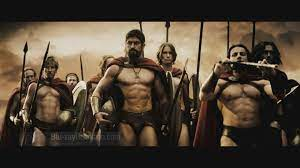

My first Best Movie
The Movie 300 is a 2007 American epic period action based on the 1998 comic series of the same name by Frank Miller and Lynn Varley.
Both are fictionalized retellings of the Battle of Thermopylae within the Persian Wars.
Produced by:Gianni Nunnari-Mark Canton-Bernie Goldman - Jeffrey Silver
Based on: Avengers comic book by Stan Lee & Jack Kirby
Production company: Legendary Pictures
| Wach the trailer 300 |
|---|
|  |